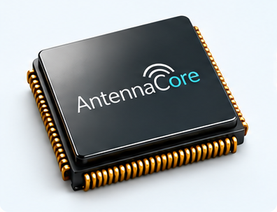
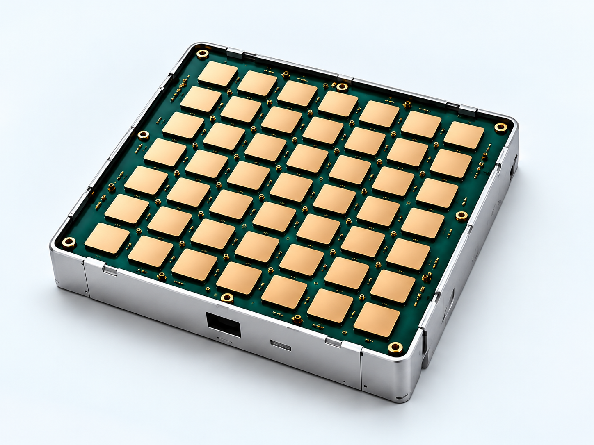

Beamsteering chips
We are developing RF integrated circuits to control the phase and timing of signals across antenna elements—the foundation of electronic beamsteering.
From silicon to antenna
We are building beamsteering chips and phased array antennas.
Bringing RF integrated circuits and antenna engineering together to shape and steer beams electronically.
Our technology

We are developing RF integrated circuits to control the phase and timing of signals across antenna elements—the foundation of electronic beamsteering.

We are developing antenna arrays that work together to form and steer a beam, bringing chip-level control into the antenna architecture.
Inside the technology
A phased array combines signals from many antenna elements. Changing their relative phase changes the direction in which those signals reinforce one another.
Our chip and antenna development brings these two sides together: how signals are controlled, and how they radiate.
Our approach
Chip design and antenna architecture are closely connected. We develop them with a shared view of the RF signal path.
RF circuit architecture, phase control and true-time-delay techniques form the starting point for beamsteering.
Antenna design, RF integration and packaging connect the silicon with the array.
Simulation, silicon characterisation and antenna measurements inform the next design iteration.
The people behind AntennaCore
Dr.-Ing. Arndt Ott and Dr. Milenko Milicevic bring complementary experience in RF architecture, integrated circuits and phased arrays.
Meet our founders